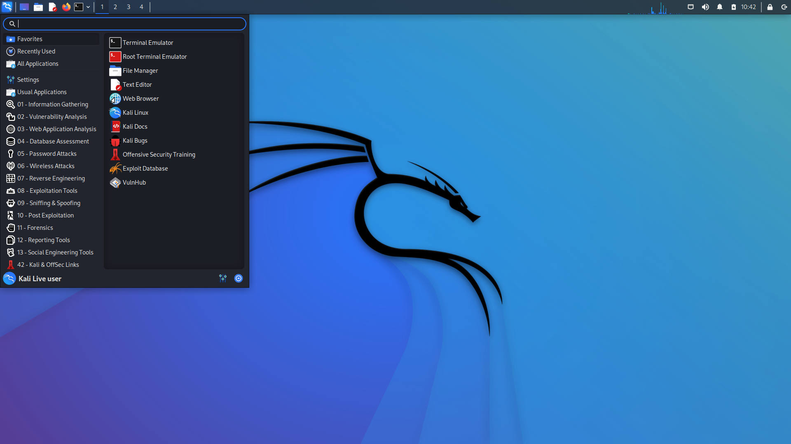

Los 11 mejores sistemas operativos para ciberseguridad
1. Kali Linux
Kali está diseñado y distribuido por Offensive Security Ltd. como una reescritura de Backtrack, para convertirlo en algo más que una simple herramienta forense distribuida por Linux. Kali, es un auténtico martillo pirata para cualquier informático.
Kali ofrece muchas razones de peso por las que ser la mejor herramienta a la hora de practicar y realizar trabajos de pentesting. Incluye más de 600 herramientas de pentesting para principiantes, es de código abierto y utiliza una cuenta root única de forma predeterminada, ya que la mayoría de las herramientas en Kali necesitan el más alto nivel de privilegios; así que parece lógico y ahorra mucho tiempo que así sea (aunque eso pueda conllevar algunas desventajas).

2. Arch Linux Black
En cuanto a la cantidad y tipos de herramientas; ¡Black Arch es una fiesta total y ofrece un absoluto arsenal que consta de más de 2154 herramientas!
Se han incluido herramientas para criptografía, depuración, análisis forense, binario, reconocimiento, proxy, radio, huellas dactilares, firmware, redes, grietas, Bluetooth, Windows, túnel, suplantación de identidad, embalaje, registro de teclas y todo lo demás.
También permite la instalación individual de estas herramientas; o mediante pequeños grupos de herramientas, lo que te hará ahorrar tiempo. Al ser un proyecto relativamente nuevo, quizás puedan aparecer errores de vez en cuando; pero el sistema operativo en sí mismo es bastante estable y se puede utilizar para proyectos importantes.
3. Parrot Sec
Parrot Sec tiene mucho en común con Kali Linux, comenzando por el hecho de que ambos son distribuciones de Linux basadas en GNU y obviamente ambos: son excelentes herramientas de pentesting.
La ventaja principal de Parrot sobre Kali es su menor uso del hardware y menor consumo de recursos, lo que significa que no se retrasa o pausa con tanta frecuencia y se carga más rápido, en general, es más dinámico y fluido.
Parrot Sec, tiene alrededor de 100 herramientas más en comparación con Kali Linux cuando se tiene en cuenta la “cantidad”. No es que realmente importe o afecte porque la mayoría de las herramientas disponibles con Parrot también se pueden descargar por separado para Kali, al igual; que con la mayoría de cualquier otro sistema.
4. Backbox
Comencemos con el hecho de que BackBox es gratuito y de código abierto y es una distribución diseñada con el objetivo de promover la seguridad de TI, también se debe destacar que incluye una amplia navaja suiza de software relacionado con la seguridad.
Promueve una amplia gama de herramientas de pentesting: para el análisis forense, la ingeniería social, la recopilación de información, la ingeniería inversa, mantenimiento, documentación, etc.
Puede que no esté tan fuertemente armado como Kali Linux o Parrot cuando se trata a cantidad de herramientas, puesto que Backbox incluye alrededor de 100 diferentes herramientas, como máximo, en comparación a las más de 600 de Kali Linux o 700 de Parrot.
Esto no tiene porque ser algo perjudicial, de hecho; quizás, sea algo de lo que cuenta a su favor; puesto que eso ayuda a que con Backbox se vea minimizadas la distracciones, al proporcionar solamente las herramientas más utilizadas e importantes para la piratería y las pruebas de hacking ético. Algunas de las herramientas que incluye son Crunch, Metasploit, Wireshark, etc. realmente no te faltará de nada.
5. Caine
Caine, es un sistema operativo forense informático que significa: entorno de investigación asistido por ordenador. Fue diseñado principalmente para las agencias de la aplicación de la ley, militares, agencias corporativas o solo personas que deseen usar una computadora para algunos de sus “potenciales extendidos” en lugar de simplemente navegar por la web.
Viene incluido con bastantes herramientas de investigación, así como herramientas cotidianas como Firefox, editores de imágenes, etc. Es completamente de código abierto. Incluye 18 utilidades principales en la categoría forense y dentro de cada una ella incluye sus propias subcategorías que amplían bastante el número de herramientas.
Al ser interpolable, compila (semi) automáticamente los datos recopilados durante una investigación en el informe final. La interfaz no será muy agradable, pero eso no es lo que estás buscando, ¿verdad? Aunque obviamente es completamente gráfico, con algunas aplicaciones excepcionales que requieren el uso de la línea de comandos.
Existe la posibilidad de ejecutarlo tanto desde un disco en vivo como instalarlo en el disco duro. Sin embargo, este último no es tan sencillo como instalar Windows y puede no ser una opción para todos.
6. Network Security
Network Security Toolkit, también abreviado como NST, es un sistema operativo “LIVE” basado en Fedora. En otras palabras, no requiere de una instalación fija, y es posible arrancarlo desde cualquier USB o CD en el que se encuentre grabado.
Proporciona herramientas de monitoreo de tráfico y pentesting extremadamente avanzadas y lo que lo hace ser un Sistema Operativo mucho más interesante es que se puede acceder a una gran cantidad de características que ofrece NST desde una interfaz web.
Algunas de las herramientas y características incluidas son: Detector de intrusiones de red, Servidor de terminal de puertos múltiples, Captura de paquetes de red de múltiples tomas, monitor de conexiones, NMap, Kismet, Escaneo de Arp, Geolocalización de dirección de host / IPv4, Servidor de sistema virtual, etc.
Las herramientas se clasifican en diferentes tipologías como servicios web, red, seguridad, GPS, desarrollador, etc. Estas se subdividen en categorías adicionales, por ejemplo, los servicios web tienen navegadores, herramientas web, administradores de Serverlet, analizadores de registros, etc. -dev, también incluye consola de Javascript integrada y más.
Con todo, un sistema operativo bastante extenso que permitirá realizar la mayoría de funciones y trabajos a cualquier hacker avanzado.
7. Arch Strike
Arch Strike es una distribución de Linux diseñada específicamente para profesionales de la ciberseguridad y pentesters. Ofrece un total de más de 5.000 paquetes que te permiten jugar con toda la extensión y amplitud de la piratería que existe.
Algunas de sus características incluyen el paquete “crackmapexec” que trata con casi todo lo que hay sobre directorios activos. ” Wsfuzzer” automatiza el pentesting SOAP, los servidores proxy gratuitos, la herramienta de huellas dactilares ASP, la inyección SQL, la extracción de información del malware, el generador de carga útil, la inyección de Wi-Fi son algunas de las muchas otras super herramientas que ofrece Arch Strike.
8. Dracos Linux
Otro de los mejores sistemas operativos para piratear es Dracos Linux, basado en LFS (Linux from Scratch). Es de código abierto y se trata de un proyecto, totalmente confiable. Con sede en Indonesia, el objetivo principal con el que se creó Dracos Linux es proporcionar una herramienta de Pentesting amplia y potente en sus ejecuciones.
Aunque desde el sitio web, nos dejan entrever que es recomendable que tengas un conocimiento básico de lo que estás haciendo. Por lo tanto, no vas encontrar una lista de sus “características” ni demasiado marketing que te explique que es lo que ofrece el sistema DracOS.
El mismo, incluye una gran cantidad de herramientas, entre algunas otras; para ingeniería inversa, ataques MITM, pruebas de explotación, análisis de malware, pruebas de estrés, ingeniería social, etc. Básicamente todo el conjunto que generalmente esperamos en un SO para seguridad o ciberhacking similar.
9. DEFT Linux
DEFT son las siglas de Digital Evidence and Forensic Toolkit. Entonces, déjame aclarar aquí que el Sistema DEFT puede ayudarte a hackear o realizar pentesting” pero es mejor usarlo como un “rastreador” o “analizador”.
Dicho esto, la lista de herramientas de DEFT está lo suficientemente poblada de armas avanzadas para ayudarte a convertirte en un auténtico Mr. Robot, dado que saben lo que incluyen y porque; y para nada son unos novatos en la creación de un SO centrado en la ciberseguridad. De hecho, incluso si eres un novato: DEFT incluye una guía que te ayudará a navegar por el entorno y aprender algunos de los conceptos básicos para usarlo.
10. Pentoo
Basado en Gentoo Linux, seguramente es uno de los SO preferidos de la mayoría de los piratas informáticos, o entre uno de los mejores sistemas operativos para entre los entusiastas de la seguridad hacker.
También, como todas las otras distribuciones de Linux que hemos presentado; es una solución de ciberseguridad y testing y también está disponible como un CD LIVE o memoria USB, así que sí, no se necesitan instalaciones hardcore.
Es compatible con infraestructuras de 32 bits y 64 bits, aunque además también se puede utilizar sobre Gentoo. Entre otras herramientas incluye herramientas de inyección de paquetes y muchas más; aunque si bien no son tantos como Kali u otras distros; pero las herramientas incluidas son más de las que la mayoría de la gente necesitaría o usaría.
11. Samurai Web Testing Framework
Como su nombre indica, el Sistema Operativo: Samurai Web Testing Framework, es claramente una solución de pruebas enfocado hacía la Web.
Lo que esto significa es que también es una caja de herramientas de hacking, pero Samurai se centra más en piratear y probar sitios web y encontrar vulnerabilidades en ellos que sobre ordenadores o teléfonos móviles de otras personas. Este Sistema Operativo te ofrece la más amplia recopilación de herramientas necesarias para hackear sitios web, en palabras de los propios desarrolladores.
Además, más que un sistema operativo como Kali o Parrot Sec, Samurai Web Testing Framework es más bien una máquina virtual; un Sistema Operativo que funciona mejor cuando se ejecuta desde dentro de otro sistema operativo. Con seguridad no nos ofrece tantas herramientas como Kali o Parrot Sec, pero aun así es de los mejores sistemas operativos para hackear porque en este caso estamos enfocados solamente en la web y, naturalmente, eso nos reduce la necesidad de herramientas necesarias.